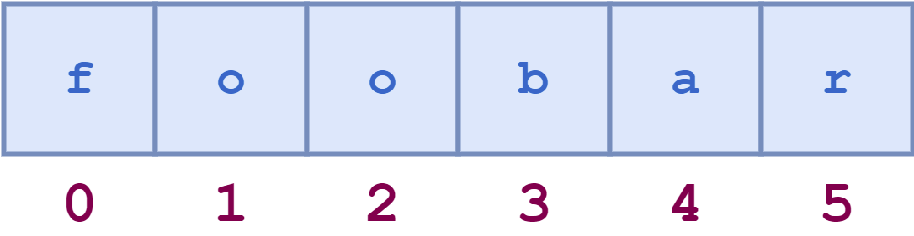

Strings and Characters#
Note
Above, you’ll see there’s a video titled CSE 121: Strings and Characters Video Walkthrough. The video and the reading both have the same information! You’re not required to go through both the video and the reading, as the video just walks through the reading to help contextualize it!
💬 Characters#
Earlier, we talked about data types in Java such as int, double, and String. We learned that strings represent a collection of characters (letters, digits, and other characters) that are strung together to form a word/sentence. Let’s explore in more detail! What are these individual characters that make up strings? Can we represent them in Java?
Turns out, Java has another data type that we can use to represent a single character (a letter, digit, or special character) called char. The syntax to create a char variable is similar to creating strings, except we use single quotes instead of double quotes.
char a = 'a';
You can work with chars similarly to ints, as they are both primitive types.
Note
Don’t worry if you’re not familiar with the idea of primitive types - these are just types that are directly built into Java! Primitive types always begin with a lowercase letter, and are Java reserved words which means that they often will be highlighted in a specific color when you type them into a Java program.
Characters are extremely important for us to be able to work with strings. We’ll see a lot more below (in the String Methods section) on how and why they’re useful!
🧠 Memory Model for Strings#
Suppose we create a string variable like below:
String s = "foobar";
If we look at a visual representation of what this string looks like in Java’s memory, it might look something like this:

Let’s break this visual down. We see there’s a set of characters (that form the word “foobar”) and there are some numbers associated with these letters, but what do these numbers mean?
String Indexes#
Each character in the string has a number associated with it that specifies its position within the string. This number is called the index of the character. Notice that we start counting at 0 and not 1 (the letter f is at index 0, not index 1).
Caution
Don’t forget that indices for Strings start at 0! This idea of starting to count at 0 is prominent in computer science and is called zero-based indexing. (We’ll encounter other ideas later in this course that also use zero-based indexing!)
String Methods#
Not only can we create string variables that store sequences of characters, but we can use perform operations on these strings using the methods below (and more!).
charAt#
The string charAt method takes as input a specific index, and returns the character at that index in the string. To use this method, we can call it on a string. We pass an integer into this method between the parentheses, which represents the index of a certain character. Let’s see this in practice ⬇️
public class CharAt {
public static void main(String[] args) {
// s => "foobar"
// index => 012345
String s = "foobar";
char first = s.charAt(0); // gets the character at index 0 ('f')
System.out.println(first);
char second = s.charAt(1); // gets the character at index 1 ('o')
System.out.println(second);
char last = s.charAt(5); // gets the character at index 5 ('r')
System.out.println(last);
}
}
Note
The index that you pass into the charAt method as a parameter needs to be within the bounds of the string. In the example above, the only valid indices that you can pass in as a parameter are 0, 1, 2, 3, 4, and 5. If you try to pass in any other number, for example 6 (with the call s.charAt(6)), Java will throw an error.
indexOf#
The string indexOf method does the opposite of the charAt method: it takes as input a character (or string), and gives us back the (first) index of that character. If the input is a string—either denoted by double quotes "" or multiple characters—the method returns the first index where the whole substring appears.
Notice the way we call the indexOf method and store its result in char variables - we’ll dig into this syntax a little bit more in a few weeks. Let’s see an example ⬇️
public class IndexOf {
public static void main(String[] args) {
// s => "foobar"
// index => 012345
String s = "foobar";
int first = s.indexOf('f'); // gets the index of character 'f' (0)
System.out.println(first);
int last = s.indexOf('r'); // gets the index of character 'r' (5)
System.out.println(last);
int middle = s.indexOf("ob"); // gets the index of substring "ob" (2)
System.out.println(middle);
}
}
Run the program above and compare the console output with the indices in the comments (line 4). Do they line up?
If you pass in a letter or substring that is not in the given string, you won’t get an error. However, you will get back the value -1, which indicates the letter/substring given is not present in the string.
length#
The string length method produces the length (number of characters) as an integer. Try running the code block below to see the syntax, and confirm that the lengths are correct!
public class Length {
public static void main(String[] args) {
String city = "Manila"; // 6 characters
int lengthOfCity = city.length();
System.out.println(lengthOfCity);
String state = "California"; // 10 characters
int lengthOfState = state.length();
System.out.println(lengthOfState);
String blank = ""; // 0 characters
int lengthOfBlank = blank.length();
System.out.println(lengthOfBlank);
}
}
Main Points#
Java has another data type,
char, which represents a single character (a digit, letter, or other special character). You denotechars likeStrings, but with single quotes (') instead of double quotes.Strings represent a sequence of characters, and also have some methods that you can call on strings to get information about them, such as
length,indexOf, andcharAt.